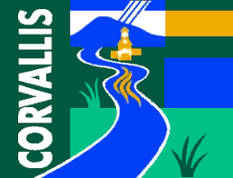

Clodfelter's, also known as Clod's is located on Monroe. It is the perfect location for college students to take a break. Many locals and visitors like grabbing beers at this location. It gets especially crowded during OSU game days due to the many TVs at this establishment. There are many beers on tap, happy hour drink and food options. One of the best nights to go is Wednesday nights for "Pint Night". The deal is a $5 pint from a new keg and happy hour food prices. When finished, you get to keep the pint glass.
Sancho's Mexican Grill is a restaurant by day, and a popular bar by night. It is oriented for college students, because it's loud and crowded. You will often have to stand in line outside before entering because it is always at capacity. They give out a free tequila shot, on the night of turning 21. Their most popular drink is called "The Sancho's Special" which costs $10 and has at least four different alcohols in it.
Impulse is next door to Sancho's and is more popular because it's a dancing club. You will hear the popular hip-hop and rap songs that are currently being heard. You will stand in line for a long time, and have to pay a cover charge. Once you make it inside, you will have to buy expensive, but generic drinks. If you're inside for more than an hour, you will start sweating profusely. During the week,there are different themed dance nights like Salsa, Girl's Night, and Wagon Wheel Wednesday.
Harrison's is a dive bar that is in the direction of downtown. This is a spot that many locals like to go. There is always someone singing terribly at karaoke. There are a few pool tables to use. The ambiance is very relaxed. During the weekends, older college kids like to go to this dive bar. The best thing about this place is that it's across the street from Riva's, which has deliciously authentic Mexican food.
The Peacock is a popular dive bar in the heart of downtown Corvallis. There are often drink specials, karaoke, and fun times to be had here. There are a few pool tables and shuffleboard to use. Their most popular nights are Western Wednesdays because they make cheap, but strong Long Islands to accompany lots of line dancing that you will be doing. If you're lucky, you can have a dance-off with local celebrity, Dancing Mike.
Corvallis is located within the Willamette Valley of Oregon. It is home to Oregon State University. There are many things to do around town. It's an hour from the coast, the mountains, and larger cities. It provides land for many outdoor activities such as hiking, biking, and running. There are many great restaurants and bars around town.
